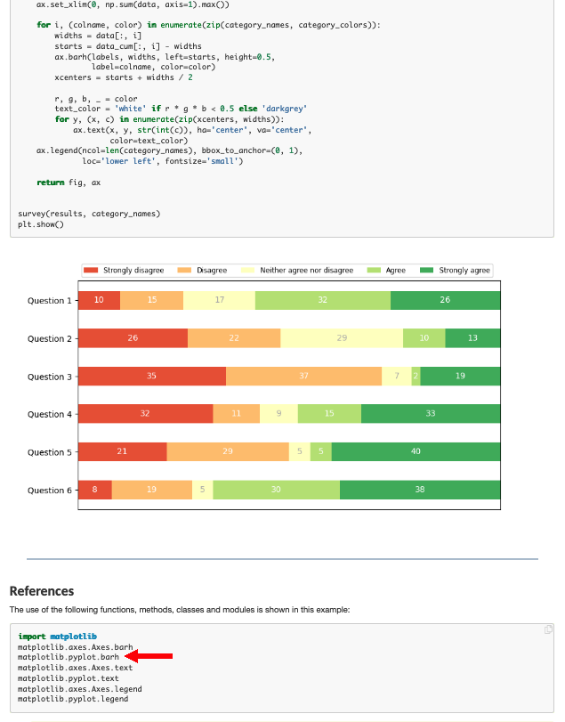
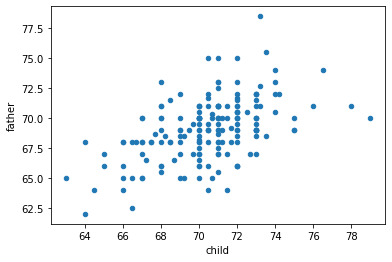
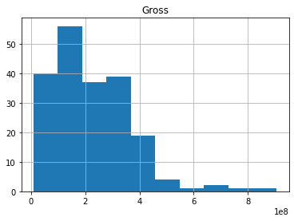

ENGR 1330 Computational Thinking with Data Science
Last GitHub Commit Date: 18 February 2021
Lesson 8 Visual Display of Data
This lesson will introduce the matplotlib external module package, and examine how to construct
line charts, scatter plots, bar charts, box plot, and histograms using methods in matplotlib and pandas
The theory of histograms will appear in later lessons, here we only show how to construct one using matplotlib
- Graphic Standards for Plots
- Parts of a Plot
- Building Plots using
matplotlibexternal package
Objectives
- Define the ordinate, abscissa, independent and dependent variables
- Identify the parts of a proper plot
- Define how to plot experimental data and theoretical data
About matplotlib
Quoting from: https://matplotlib.org/tutorials/introductory/pyplot.html#sphx-glr-tutorials-introductory-pyplot-py
matplotlib.pyplot is a collection of functions that make matplotlib work like MATLAB. Each pyplot function makes some change to a figure: e.g., creates a figure, creates a plotting area in a figure, plots some lines in a plotting area, decorates the plot with labels, etc.
In matplotlib.pyplot various states are preserved across function calls, so that it keeps track of things like the current figure and plotting area, and the plotting functions are directed to the current axes (please note that "axes" here and in most places in the documentation refers to the axes part of a figure and not the strict mathematical term for more than one axis).
Computational thinking (CT) concepts involved are:
Decomposition: Break a problem down into smaller pieces; separating plotting from other parts of analysis simplifies maintenace of scriptsAbstraction: Pulling out specific differences to make one solution work for multiple problems; wrappers around generic plot calls enhances reuseAlgorithms: A list of steps that you can follow to finish a task; Often the last step and most important to make professional graphics to justify the expense (of paying you to do engineering) to the client.
Graphics Conventions for Plots
Terminology: Ordinate, Abscissa, Dependent and Independent Variables
A few terms are used in describing plots: - Abscissa – the horizontal axis on a plot (the left-right axis) - Ordinate – the vertical axis on a plot (the up-down axis)
A few terms in describing data models - Independent Variable (Explainatory, Predictor, Feature, ...) – a variable that can be controlled/manipulated in an experiment or theoretical analysis - Dependent Variable (Response, Prediction, ...) – the variable that measured/observed as a function of the independent variable
Plotting convention in most cases assigns explainatory variables to the horizontal axis (e.g. Independent variable is plotted on the Abscissa) and the response variable(s) to the vertical axis (e.g. Dependent Variable is plotted on the Ordinate)
Conventions for Proper Plots
- Include a title OR a caption with a brief description of the plot
- Label both axes clearly
- Include the variable name, the variable, and the unit in each label
- If possible, select increments for both the x and y axes that provide for easy interpolation
- Include gridlines
- Show experimental measurements as symbols
- Show model (theoretical) relationships as lines

- Use portrait orientation when making your plot
- Make the plot large enough to be easily read
- If more than one experimental dataset is plotted
- Use different shapes for each dataset
- Use different colors for each dataset
- Include a legend defining the datasets


Background
Data are not always numerical. Data can be music (audio files), or places on a map (georeferenced attributes files), images (various imge files, e.g. .png, jpeg) and other types.
Categorical data is a type where you can place individual components into a category:
For example visualize a freezer where a business stores ice cream, the product is categorized by flavor, each carton is a component. - The individual components are cartons of ice-cream, and the category is the flavor in the carton
Bar Graphs
Bar charts (graphs) are useful tools to graphically represent categorical information.
The bars are evenly spaced and of constant width. The height/length of each bar is proportional to the relative frequency of the corresponding category. Relative frequency is the ratio of how many things in the category to how many things in the whole collection.
The example below uses matplotlib to create a box plot for the ice cream analogy, the example is adapted from an example at https://www.geeksforgeeks.org/bar-plot-in-matplotlib/
ice_cream = {'Chocolate':16, 'Strawberry':5, 'Vanilla':9} # build a data model
import matplotlib.pyplot # the python plotting library
flavors = list(ice_cream.keys()) # make a list object based on flavors
cartons = list(ice_cream.values()) # make a list object based on carton count -- assumes 1:1 association!
type(flavors)
list
myfigure = matplotlib.pyplot.figure(figsize = (10,5)) # generate a object from the figure class, set aspect ratio
<Figure size 720x360 with 0 Axes>
# Built the plot
matplotlib.pyplot.bar(flavors, cartons, color ='magenta', width = 0.4)
matplotlib.pyplot.xlabel("Flavors")
matplotlib.pyplot.ylabel("No. of Cartons in Stock")
matplotlib.pyplot.title("Current Ice Cream in Storage")
matplotlib.pyplot.show()
Lets tidy up the script so it is more understandable, a small change in the import statement makes a simpler to read (for humans) script - also changed the bar colors just 'cause!
ice_cream = {'Chocolate':16, 'Strawberry':5, 'Vanilla':9} # build a data model
import matplotlib.pyplot as plt # the python plotting library
flavors = list(ice_cream.keys()) # make a list object based on flavors
cartons = list(ice_cream.values()) # make a list object based on carton count -- assumes 1:1 association!
myfigure = plt.figure(figsize = (10,5)) # generate a object from the figure class, set aspect ratio
# Built the plot
plt.bar(flavors, cartons, color ='green', width = 0.4)
plt.xlabel("Flavors")
plt.ylabel("No. of Cartons in Stock")
plt.title("Current Ice Cream in Storage")
plt.show()
Now lets deconstruct the script a bit:
ice_cream = {'Chocolate':16, 'Strawberry':5, 'Vanilla':9} # build a data model
import matplotlib.pyplot as plt # the python plotting library
flavors = list(ice_cream.keys()) # make a list object based on flavors
cartons = list(ice_cream.values()) # make a list object based on carton count -- assumes 1:1 association!
This part of the code creates a dictionary object, keys are the flavors, values are the carton counts (not the best way, but good for our learning needs). Next we import the python plotting library from matplotlib and name it plt to keep the script a bit easier to read.
Next we use the list method to create two lists from the dictionary, flavors and cartons. Keep this in mind plotting is usually done on lists, so we need to prepare the structures properly.
The next statement
myfigure = plt.figure(figsize = (10,5)) # generate a object from the figure class, set aspect ratio
Uses the figure class in pyplot from matplotlib to make a figure object named myfigure, the plot is built into this object. Every call to a method in plt adds content to myfigure until we send the instruction to render the plot (plt.show())
The next portion of the script builds the plot:
plt.bar(flavors, cartons, color ='orange', width = 0.4) # Build a bar chart, plot series flavor on x-axis, plot series carton on y-axis. Make the bars orange, set bar width (units unspecified)
plt.xlabel("Flavors") # Label the x-axis as Flavors
plt.ylabel("No. of Cartons in Stock") # Label the x-axis as Flavors
plt.title("Current Ice Cream in Storage") # Title for the whole plot
This last statement renders the plot to the graphics device (probably localhost in the web browser)
plt.show()
Now lets add another set of categories to the plot and see what happens
ice_cream = {'Chocolate':16, 'Strawberry':5, 'Vanilla':9} # build a data model
eaters = {'Cats':6, 'Dogs':5, 'Ferrets':19} # build a data model
import matplotlib.pyplot as plt # the python plotting library
flavors = list(ice_cream.keys()) # make a list object based on flavors
cartons = list(ice_cream.values()) # make a list object based on carton count -- assumes 1:1 association!
animals = list(eaters.keys())
beastcount = list(eaters.values())
myfigure = plt.figure(figsize = (10,5)) # generate a object from the figure class, set aspect ratio
# Built the plot
plt.bar(flavors, cartons, color ='gray', width = 0.4)
plt.bar(animals, beastcount, color ='brown', width = 0.4)
plt.xlabel("Flavors")
plt.ylabel("Counts: Cartons and Beasts")
plt.title("Current Ice Cream in Storage")
plt.show()
Now suppose we want horizontal bars we can search pyplot for such a thing. If one types horizontal bar chart into the pyplot search engine there is a link that leads to:

Which has the right look! If we examine the script there is a method called barh so lets try that.
ice_cream = {'Chocolate':16, 'Strawberry':5, 'Vanilla':9} # build a data model
eaters = {'Cats':6, 'Dogs':5, 'Ferrets':19} # build a data model
import matplotlib.pyplot as plt # the python plotting library
flavors = list(ice_cream.keys()) # make a list object based on flavors
cartons = list(ice_cream.values()) # make a list object based on carton count -- assumes 1:1 association!
animals = list(eaters.keys())
beasts = list(eaters.values())
myfigure = plt.figure(figsize = (10,5)) # generate a object from the figure class, set aspect ratio
# Built the plot
plt.barh(flavors, cartons, color ='orange')
plt.barh(animals, beasts, color ='green')
plt.xlabel("Flavors")
plt.ylabel("Counts: Cartons and Beasts")
plt.title("Current Ice Cream in Storage")
plt.show()

Now using pandas, we can build bar charts a bit easier.
import pandas as pd
my_data = {
"Flavor": ['Chocolate', 'Strawberry', 'Vanilla'],
"Number of Cartons": [16, 5, 9]
}
df = pd.DataFrame(my_data)
df.head()
| Flavor | Number of Cartons | |
|---|---|---|
| 0 | Chocolate | 16 |
| 1 | Strawberry | 5 |
| 2 | Vanilla | 9 |
df.plot.bar(x='Flavor', y='Number of Cartons', color='magenta' )
<AxesSubplot:xlabel='Flavor'>

df.plot.barh(x='Flavor', y='Number of Cartons', color="red") # rotate the category labels
<AxesSubplot:ylabel='Flavor'>
import numpy as np
import matplotlib.pyplot as plt
# creating the dataset
data = {'C':20, 'C++':15, 'Java':30,
'Python':35}
courses = list(data.keys())
values = list(data.values())
fig = plt.figure(figsize = (10, 5))
# creating the bar plot
plt.bar(courses, values, color ='maroon',
width = 0.4)
plt.xlabel("Courses offered")
plt.ylabel("No. of students enrolled")
plt.title("Students enrolled in different courses")
plt.show()

Line Charts
A line chart or line plot or line graph or curve chart is a type of chart which displays information as a series of data points called 'markers' connected by straight line segments.
It is a basic type of chart common in many fields. It is similar to a scatter plot (below) except that the measurement points are ordered (typically by their x-axis value) and joined with straight line segments.
A line chart is often used to visualize a trend in data over intervals of time – a time series – thus the line is often drawn chronologically.
The x-axis spacing is sometimes tricky, hence line charts can unintentionally decieve - so be careful that it is the appropriate chart for your application.
Example
Consider the experimental data below
| Elapsed Time (s) | Speed (m/s) |
|---|---|
| 0 | 0 |
| 1.0 | 3 |
| 2.0 | 7 |
| 3.0 | 12 |
| 4.0 | 20 |
| 5.0 | 30 |
| 6.0 | 45.6 |
Show the relationship between time and speed. Is the relationship indicating acceleration? How much?
# Create two lists; time and speed.
time = [0,1.0,2.0,3.0,4.0,5.0,6.0]
speed = [0,3,7,12,20,30,45.6]
# Create a line chart of speed on y axis and time on x axis
mydata = plt.figure(figsize = (10,5)) # build a square drawing canvass from figure class
plt.plot(time, speed, c='red', marker='v',linewidth=1) # basic line plot
plt.show()

time = [0,1.0,4.0,5.0,6.0,2.0,3.0]
speed = [0,3,20,30,45.6,7,12]
# Create a line chart of speed on y axis and time on x axis
mydata = plt.figure(figsize = (10,5)) # build a square drawing canvass from figure class
plt.plot(time, speed, c='green', marker='o',linewidth=1) # basic line plot
plt.show()

# Estimate acceleration (naive)
dvdt = (max(speed) - min(speed))/(max(time)-min(time))
plottitle = 'Average acceleration %.3f' % (dvdt) + ' m/sec/sec'
seriesnames = ['Data','Model']
modely = [min(speed),max(speed)]
modelx = [min(time),max(time)]
mydata = plt.figure(figsize = (10,5)) # build a square drawing canvass from figure class
plt.plot(time, speed, c='red', marker='v',linewidth=0) # basic line plot
plt.plot(modelx, modely, c='blue',linewidth=1) # basic line plot
plt.xlabel('Time (sec)')
plt.ylabel('Speed (m/sec)')
plt.legend(seriesnames)
plt.title(plottitle)
plt.show()
Scatter Plots
A scatter plot (also called a scatterplot, scatter graph, scatter chart, scattergram, or scatter diagram) is a type of plot or mathematical diagram using Cartesian coordinates to display values for typically two variables for a set of data. If the points are coded (color/shape/size), one additional variable can be displayed. The data are displayed as a collection of points, each having the value of one variable determining the position on the horizontal axis and the value of the other variable determining the position on the vertical axis.
A scatter plot can be used either when one continuous variable that is under the control of the experimenter and the other depends on it or when both continuous variables are independent. If a parameter exists that is systematically incremented and/or decremented by the other, it is called the control parameter or independent variable and is customarily plotted along the horizontal axis. The measured or dependent variable is customarily plotted along the vertical axis. If no dependent variable exists, either type of variable can be plotted on either axis and a scatter plot will illustrate only the degree of correlation (not causation) between two variables.
A scatter plot can suggest various kinds of correlations between variables with a certain confidence interval. For example, weight and height, weight would be on y axis and height would be on the x axis. Correlations may be positive (rising), negative (falling), or null (uncorrelated). If the pattern of dots slopes from lower left to upper right, it indicates a positive correlation between the variables being studied. If the pattern of dots slopes from upper left to lower right, it indicates a negative correlation.
A line of best fit (alternatively called 'trendline') can be drawn in order to study the relationship between the variables. An equation for the correlation between the variables can be determined by established best-fit procedures. For a linear correlation, the best-fit procedure is known as linear regression and is guaranteed to generate a correct solution in a finite time. No universal best-fit procedure is guaranteed to generate a solution for arbitrary relationships. A scatter plot is also very useful when we wish to see how two comparable data sets agree and to show nonlinear relationships between variables.
Furthermore, if the data are represented by a mixture model of simple relationships, these relationships will be visually evident as superimposed patterns.
Scatter charts can be built in the form of bubble, marker, or/and line charts.
Much of the above is verbatim/adapted from:https://en.wikipedia.org/wiki/Scatter_plot
# Example 1. A data file containing heights of fathers, mothers, and sons is to be examined
df = pd.read_csv('galton_subset.csv')
df['child']= df['son'] ; df.drop('son', axis=1, inplace = True) # rename son to child - got to imagine there are some daughters
df.head()
| father | mother | child | |
|---|---|---|---|
| 0 | 78.5 | 67.0 | 73.2 |
| 1 | 75.5 | 66.5 | 73.5 |
| 2 | 75.0 | 64.0 | 71.0 |
| 3 | 75.0 | 64.0 | 70.5 |
| 4 | 75.0 | 58.5 | 72.0 |
# build some lists
daddy = df['father'] ; mommy = df['mother'] ; baby = df['child']
myfamily = plt.figure(figsize = (10, 10)) # build a square drawing canvass from figure class
plt.scatter(baby, daddy, c='red') # basic scatter plot
plt.show()

# Looks lousy, needs some labels
myfamily = plt.figure(figsize = (10, 10)) # build a square drawing canvass from figure class
plt.scatter(baby, daddy, c='red' , label='Father') # one plot series
plt.scatter(baby, mommy, c='blue', label='Mother') # two plot series
plt.xlabel("Child's height")
plt.ylabel("Parents' height")
plt.legend()
plt.show() # render the two plots

# Repeat in pandas - The dataframe already is built
df.plot.scatter(x="child", y="father")
<AxesSubplot:xlabel='child', ylabel='father'>

ax = df.plot.scatter(x="child", y="father", c="red", label='Father')
df.plot.scatter(x="child", y="mother", c="blue", label='Mother', ax=ax)
ax.set_xlabel("Child's height")
ax.set_ylabel("Parents' Height")
Text(0, 0.5, "Parents' Height")

df.plot.scatter(x="child", y="father")
<AxesSubplot:xlabel='child', ylabel='father'>

Histograms
Quilting from https://en.wikipedia.org/wiki/Histogram
"A histogram is an approximate representation of the distribution of numerical data. It was first introduced by Karl Pearson. To construct a histogram, the first step is to "bin" (or "bucket") the range of values—that is, divide the entire range of values into a series of intervals—and then count how many values fall into each interval. The bins are usually specified as consecutive, non-overlapping intervals of a variable. The bins (intervals) must be adjacent, and are often (but not required to be) of equal size.
If the bins are of equal size, a rectangle is erected over the bin with height proportional to the frequency—the number of cases in each bin. A histogram may also be normalized to display "relative" frequencies. It then shows the proportion of cases that fall into each of several categories, with the sum of the heights equaling 1.
However, bins need not be of equal width; in that case, the erected rectangle is defined to have its area proportional to the frequency of cases in the bin. The vertical axis is then not the frequency but frequency density—the number of cases per unit of the variable on the horizontal axis.
As the adjacent bins leave no gaps, the rectangles of a histogram touch each other to indicate that the original variable is continuous.
Histograms give a rough sense of the density of the underlying distribution of the data, and often for density estimation: estimating the probability density function of the underlying variable. The total area of a histogram used for probability density is always normalized to 1. If the length of the intervals on the x-axis are all 1, then a histogram is identical to a relative frequency plot.
A histogram can be thought of as a simplistic kernel density estimation, which uses a kernel to smooth frequencies over the bins. This yields a smoother probability density function, which will in general more accurately reflect distribution of the underlying variable. The density estimate could be plotted as an alternative to the histogram, and is usually drawn as a curve rather than a set of boxes. Histograms are nevertheless preferred in applications, when their statistical properties need to be modeled. The correlated variation of a kernel density estimate is very difficult to describe mathematically, while it is simple for a histogram where each bin varies independently.
An alternative to kernel density estimation is the average shifted histogram, which is fast to compute and gives a smooth curve estimate of the density without using kernels.
The histogram is one of the seven basic tools of quality control.
Histograms are sometimes confused with bar charts. A histogram is used for continuous data, where the bins represent ranges of data, while a bar chart is a plot of categorical variables. Some authors recommend that bar charts have gaps between the rectangles to clarify the distinction."
import pandas as pd
df = pd.read_csv('top_movies.csv')
df.head()
| Title | Studio | Gross | Gross (Adjusted) | Year | |
|---|---|---|---|---|---|
| 0 | Star Wars: The Force Awakens | Buena Vista (Disney) | 906723418 | 906723400 | 2015 |
| 1 | Avatar | Fox | 760507625 | 846120800 | 2009 |
| 2 | Titanic | Paramount | 658672302 | 1178627900 | 1997 |
| 3 | Jurassic World | Universal | 652270625 | 687728000 | 2015 |
| 4 | Marvel's The Avengers | Buena Vista (Disney) | 623357910 | 668866600 | 2012 |
df[["Gross"]].hist()
array([[<AxesSubplot:title={'center':'Gross'}>]], dtype=object)

df[["Gross"]].hist(bins=100)
array([[<AxesSubplot:title={'center':'Gross'}>]], dtype=object)
df.describe()
| Gross | Gross (Adjusted) | Year | |
|---|---|---|---|
| count | 2.000000e+02 | 2.000000e+02 | 200.000000 |
| mean | 2.216196e+08 | 5.041983e+08 | 1986.620000 |
| std | 1.441574e+08 | 2.159814e+08 | 20.493548 |
| min | 9.183673e+06 | 3.222619e+08 | 1921.000000 |
| 25% | 1.087824e+08 | 3.677804e+08 | 1973.000000 |
| 50% | 2.001273e+08 | 4.388570e+08 | 1990.000000 |
| 75% | 3.069535e+08 | 5.512131e+08 | 2003.250000 |
| max | 9.067234e+08 | 1.757788e+09 | 2015.000000 |
References
Constructing Horizontal Bar Charts (matplotlib.org documentation) https://matplotlib.org/gallery/lines_bars_and_markers/horizontal_barchart_distribution.html?highlight=horizontal%20bar%20chart
How to make a bar chart https://www.geeksforgeeks.org/bar-plot-in-matplotlib/